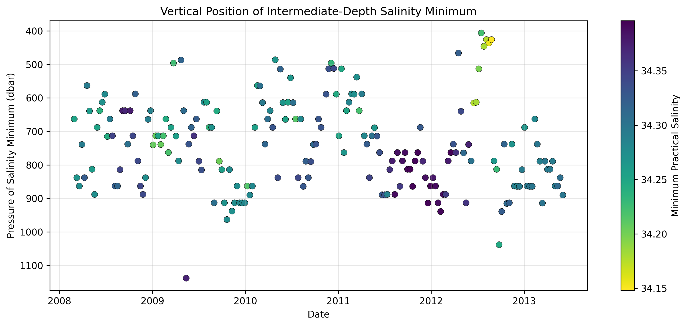
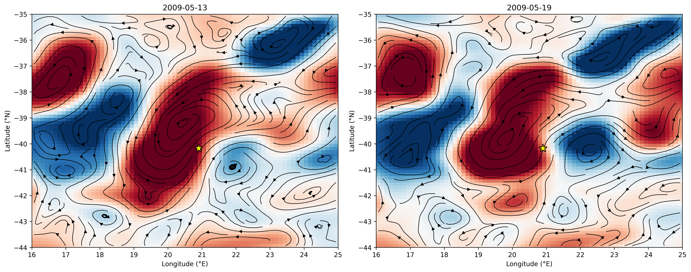
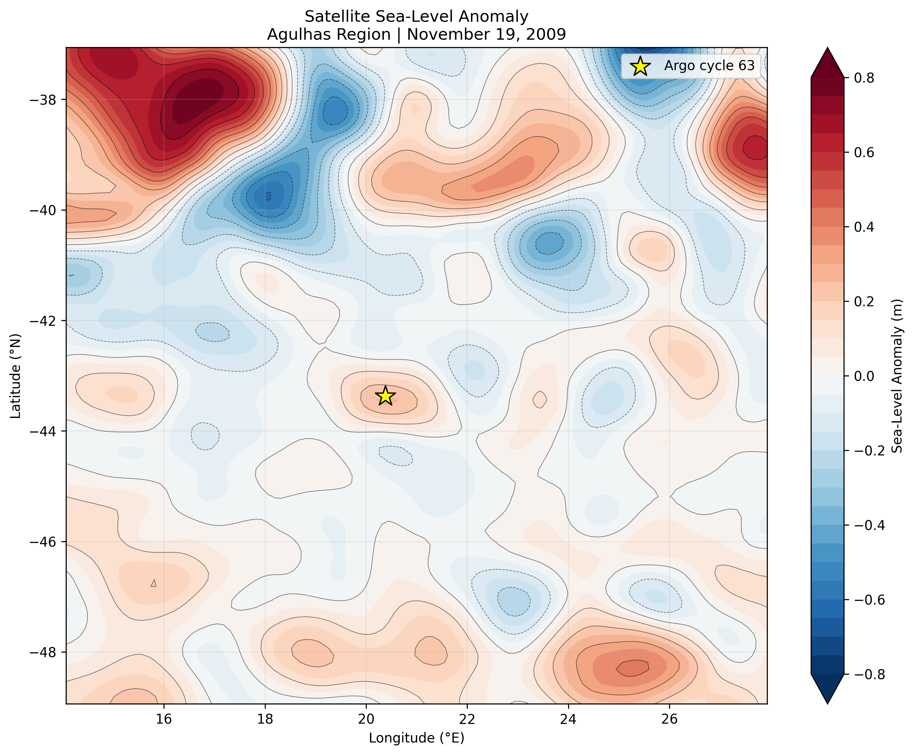
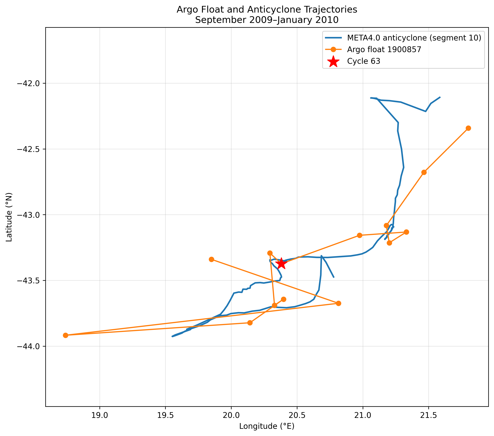

It Began with an Unexpected Observation
What started as a simple Python exercise for my oceanography course turned into a much bigger investigation than I expected.
I was learning to work with Argo float data using argopy, exploring temperature, salinity, and density profiles from a float that had traveled through the Southern Ocean. I wasn't looking for anything in particular. I just wanted to see what the data could tell me.
Then I noticed something unusual.
One profile looked dramatically different from those around it. I had no idea what caused it, but I was curious enough to keep digging. What followed was a series of questions, unexpected findings, and a lot more Python than I'd originally planned.
Following the Evidence
From Exploration to Anomaly Detection
I started by examining how the depth of the intermediate salinity minimum changed along Argo float 1900857's trajectory between 2008 and 2013.
The time series showed considerable variability, but one observation stood out. I calculated the changes between successive profiles to see just how unusual it was.

Investigating the Anomaly
On 13 May 2009, cycle 44 recorded the largest change in the dataset. The salinity minimum had shifted to 1,138 dbar, approximately 500 dbar deeper than in the preceding profile. Just ten days later, it returned upward by roughly 400 dbar.

What could cause such a dramatic change in just ten days?
I compared the temperature, salinity, and potential-density profiles from cycles 43, 44, and 45. The differences were striking. At intermediate depths, cycle 44 contained much warmer and saltier water than either neighboring profile, accompanied by substantially lower potential density.

What initially looked like an unusual shift in the salinity minimum was actually part of a much broader change in the water column.
Had the float encountered a different water mass? Or perhaps a larger oceanographic feature?
Before I could investigate either possibility, though, I needed to make sure the measurements were reliable.
Could the Measurements Be Wrong?
Before getting too excited about the anomaly, I needed to make sure it wasn't simply a measurement error.
I started by checking the Argo quality-control flags. All 110 pressure-level observations examined in cycle 44 had QC flag 1, indicating good-quality measurements across the observed range of 16–2005 dbar.
Examining the Vertical Structure
The quality-control results were reassuring, but I wanted to know whether the anomaly affected the broader water column.
I compared the depth of the same potential-density surface, or isopycnal, across cycles 43, 44, and 45.
And there was a striking difference.
In cycle 44, the σ₀ = 27.0 kg/m³ isopycnal was approximately 406 dbar deeper than its average position in the neighboring profiles.

The good quality-control flags and the substantial displacement of the isopycnal gave me reason to believe the anomaly was real. They couldn't rule out every possible measurement problem, but there was no obvious reason to dismiss the profile.
Now I had a more interesting question: What physical process could produce such an unusual structure?
Next question: What physical process could produce this structure?
The measurements looked credible, but I still didn't know what could explain the unusually warm, saline water and the dramatic displacement of the density surfaces.
A Possible Mesoscale Eddy
One possibility was an anticyclonic eddy. These large, rotating ocean features can push density surfaces downward, allowing warmer water to extend much deeper than in surrounding waters.
That seemed consistent with what I was seeing in cycle 44.
The float was also in the Agulhas region, where energetic currents and eddies create complex circulation patterns. Some of these eddies, known as Agulhas rings, carry warm, saline Indian Ocean water into the Atlantic.
Could the float have encountered one of them?
Following a Clue in the Literature
Curious about Agulhas rings, I started looking through published research and came across a study by Casanova-Masjoan et al. (2017). The researchers had investigated an Agulhas ring that formed in late 2009, using satellite observations, hydrographic measurements, and surface drifters to follow its evolution.
What caught my attention was the timing.
Their ring had formed several months after my anomaly in May 2009.
That got me wondering whether my float might have encountered another Agulhas ring earlier that year, perhaps one that hadn't been studied in the same detail.
I had a plausible explanation, but the Argo profiles alone couldn't establish whether an eddy was responsible. I needed independent evidence.
So I turned to satellite observations.
Next question: Was there an eddy near the float in May 2009?
Reference
Casanova-Masjoan, M., et al. (2017). Characteristics and evolution of an Agulhas ring. Journal of Geophysical Research: Oceans. https://doi.org/10.1002/2017JC012969
A Promising First Look
Armed with a possible explanation, I turned to satellite altimetry to see what was happening around the float on 13 May 2009.
Satellite altimetry measures variations in sea surface height, which can help reveal large ocean features such as mesoscale eddies. Anticyclonic eddies in the Southern Hemisphere are often associated with elevated sea surface height, making them possible candidates for the warm, saline water I had observed.
And the first image looked promising.
The float appeared to be sitting inside a large red region of elevated sea surface height.
Could this be the Agulhas ring I was looking for?

Following the Red Mass
One image wasn't enough to convince me. I wanted to know whether that red region had been moving through the area or whether it had only appeared around the date of the anomaly.
I started examining satellite images from the days and weeks before and after cycle 44.
There were several large regions of elevated sea surface height moving through the area. Some appeared to pass close to the float, but I couldn't tell whether I was following the same feature through time or watching separate features form, merge, and disappear.
The images were fascinating, but they weren't giving me a clear answer.
So I tried something else.
Watching the Ocean Move
I created an animation from the satellite observations, hoping that watching the sea surface height patterns evolve would reveal something that wasn't obvious in individual images.
It was exciting to see the circulation patterns come to life. But even with the animation, I couldn't confidently identify a single eddy moving past the float.
The red regions changed shape and interacted with one another. There was clearly a lot happening in the area, but I couldn't establish whether the float had encountered a particular anticyclone.
Every new visualization seemed to bring me closer to an answer, yet something was still missing.
Looking for a More Definite Boundary
I eventually turned to an eddy-tracking dataset that identifies individual mesoscale eddies and their geographic boundaries.
This seemed like exactly what I needed. Instead of interpreting the red regions visually, I could compare the float's location with the boundary of an identified anticyclone.
The dataset revealed a candidate eddy approximately 125 km from the float, with an effective radius of about 117 km.
That was close enough to be interesting.
I examined the tracking records to see whether the candidate had persisted through the period of the anomaly. But the tracking history included branching relationships, making it difficult to establish a continuous trajectory.
Still, I wanted to see what the actual eddy boundary looked like.

And there it was.
The float was outside the contour.
Not dramatically far away, but outside nonetheless.
So Close, but Not Quite
After all those plots, satellite images, tracking records, and the animation, I thought I might finally have found evidence of an encounter with an Agulhas ring.
But the contour told a different story. The satellite observations showed elevated sea surface height near the float, and the eddy atlas identified an anticyclone in the vicinity.
It was disappointing. I couldn't establish that the float had entered a discrete anticyclone, but the hydrographic evidence was difficult to ignore. Cycle 44 showed temperature differences approaching +7.6°C, salinity differences of approximately +0.95 g/kg, and density surfaces displaced downward by more than 400 dbar.
Whatever had happened, the float had sampled a markedly different hydrographic environment.
But after spending so much time investigating this one profile, I started wondering how it compared with the rest of the float's record.
Next question: Just how unusual was cycle 44?
Was Cycle 44 Really That Unusual?
After spending so much time investigating cycle 44, I still couldn't confidently identify the oceanographic feature responsible for the anomaly.
The hydrographic evidence was compelling, but the satellite observations and eddy-tracking records hadn't given me the confirmation I was hoping for.
I started wondering whether cycle 44 was actually the most exceptional observation in the float's record.
What if other cycles showed even greater isopycnal depression?
I decided to find out.
Looking at the Bigger Picture
I calculated the depths of selected potential-density surfaces across the float's complete record and plotted how they changed from cycle to cycle.

I expected cycle 44 to stand out.
And it did. At 879.4 dbar, it had the deepest σ₀ = 27.0 kg/m³ isopycnal in the entire record.
But something else caught my attention.
There was another period when the density surfaces remained unusually deep across several consecutive profiles.
Unlike cycle 44, which appeared as a relatively isolated anomaly, this looked like a sustained change in the water column.
I ranked the observations to see just how unusual this cluster was.
View the 10 deepest isopycnal observations
The ten deepest observations of the σ₀ = 27.0 kg/m³ isopycnal across 192 Argo float cycles, ranked by pressure.
| Rank | Cycle | Pressure (dbar) |
|---|---|---|
| 1 | 44 | 879.4 |
| 2 | 68 | 822.8 |
| 3 | 144 | 777.8 |
| 4 | 65 | 749.6 |
| 5 | 60 | 747.1 |
| 6 | 62 | 742.9 |
| 7 | 67 | 740.8 |
| 8 | 66 | 736.9 |
| 9 | 63 | 727.9 |
| 10 | 64 | 718.4 |
Highlighted rows identify observations from the late-2009 anomaly during cycles 60–68.
Cycles 60, 62, 63, 64, 65, 66, 67, and 68 all appeared among the ten deepest observations.
Eight of the ten.
That was unexpected. I had been concentrating on one unusual profile in May, but now I was looking at a cluster of unusually deep isopycnals later in the year.
A Familiar Hydrographic Signature
I wanted to know whether these later profiles also contained the unusually warm, saline water I'd encountered in May.
So I compared Conservative Temperature, Absolute Salinity, and potential density at approximately 500 dbar.
The results looked familiar.
View hydrographic measurements at 500 dbar
Comparison of Conservative Temperature (CT), Absolute Salinity (SA), and potential density (σ₀) during the May 2009 anomaly and selected observations from the later event.
| Cycle | CT (°C) | SA (g/kg) | σ₀ (kg/m³) |
|---|---|---|---|
| 43 | 6.298 | 34.553 | 27.034 |
| 44 | 13.414 | 35.445 | 26.524 |
| 45 | 6.666 | 34.579 | 27.006 |
| 60 | 11.132 | 35.138 | 26.732 |
| 62 | 10.963 | 35.104 | 26.735 |
| 64 | 11.462 | 35.208 | 26.724 |
| 66 | 11.077 | 35.133 | 26.737 |
| 68 | 11.615 | 35.092 | 26.606 |
Measurements are evaluated at approximately 500 dbar. Cycle 44 represents the initial anomaly; cycles 60–68 represent the later interval of sustained isopycnal depression.
The later profiles weren't quite as extreme as cycle 44, but they showed a similar combination of elevated temperature and salinity and relatively low potential density.
This suggested that the unusual density structure wasn't the only similarity between the two periods.
A Familiar Date
I wanted to know where the float had been during this second anomaly, so I mapped its trajectory from cycles 55–73.

And then I remembered something.
During my earlier research into Agulhas rings, I'd come across the study by Casanova-Masjoan et al. (2017), which investigated a ring formed in late 2009.
The timing was intriguing.
Could the unusual profiles I was seeing be connected to that ring?
Of course, the timing alone wasn't enough to establish a connection. But after the inconclusive May investigation, this seemed like a promising new direction.
A New Direction
I decided to shift my attention to the later cycles.
This time, I wanted to investigate whether the float's unusual hydrographic observations could be associated with an identified anticyclone.
The first investigation hadn't given me the answer I'd hoped for.
But in trying to understand just how unusual cycle 44 was, I'd stumbled onto something I hadn't expected.
And now I had a new lead to follow.
Next question: Could the late-2009 anomaly be connected to an Agulhas ring?
Returning to Satellite Altimetry
With the second hydrographic anomaly identified, I returned to the satellite observations.
This time, I had more to work with: several profiles showing unusually deep isopycnals, a sustained period of unusual hydrographic conditions, and a float trajectory concentrated within a relatively small geographic area.
But I remembered what happened in May. The satellite imagery had looked promising then, too.
I wasn't getting my hopes up just yet.
I examined the sea-level anomaly field for 19 November 2009, corresponding to cycle 63.
And there it was.
A prominent region of elevated sea surface height, with the float positioned near its center.

It looked remarkably promising. But I'd learned from the May investigation that a red region on a satellite map wasn't enough.
I needed to know whether an identified anticyclone actually enclosed the float.
Finding the Anticyclone
I returned to the AVISO Mesoscale Eddy Trajectory Atlas (META4.0) and searched for anticyclones near the float on 19 November.
I found a candidate associated with the positive sea-level anomaly and plotted its effective contour.
This was the moment I had been hoping for.
The float was inside the contour.

After all the uncertainty surrounding cycle 44, this was exciting.
For the first time, the hydrographic observations, satellite altimetry, and independently identified eddy boundary all pointed toward the same explanation.
But one observation wasn't enough to establish an extended encounter.
Had the float been traveling with this eddy, or had it simply passed through on that particular day?
Following the Eddy Through Time
I retrieved the META4.0 tracking records for the candidate anticyclone, identified as track 477593, segment 10.
The dataset contained 144 daily observations, extending from 1 September 2009 to 22 January 2010.
That was encouraging. The eddy had a recorded history spanning the entire period of the second hydrographic anomaly.
Now I could compare its movements with those of the float.
Comparing Their Paths
I plotted the anticyclone's daily center positions alongside the float's trajectory between September 2009 and January 2010.

And the paths looked surprisingly similar.
For much of the tracking period, the float and anticyclone moved through the same general region.
After spending so much time trying to connect the pieces in May, it was satisfying to see the evidence finally coming together.
But I wasn't quite ready to call it a discovery.
The trajectory map suggested an extended association, but similar paths didn't necessarily mean the float had remained inside the eddy. I needed to compare the float's position with the actual eddy boundary on each observation date.
This time, I wanted to go beyond a promising visualization and test the relationship directly.
Next question: Did the float remain inside the anticyclone over time?
Was the Float Really Inside the Eddy?
Finding the float inside the anticyclone on 19 November was exciting, but I wanted to know whether it had remained associated with the eddy over time.
I matched the float's observations with the daily eddy records and calculated their geographic separation, normalized by the eddy's effective radius.

The results looked promising, but there was a problem.
An eddy's effective radius represents a circle with the same area as its actual boundary. Since eddies aren't perfect circles, being within that radius doesn't necessarily mean being inside the eddy.
I needed to test the actual contours.
Using a point-in-polygon analysis, I found that 13 of the 14 examined float positions fell inside the anticyclone's effective contour.
The one exception was cycle 58, recorded on 30 September 2009. Its normalized distance was approximately 0.96, which would have suggested containment using the simpler radius-based approach. But the actual contour showed that the float was outside.
Even more exciting, 11 consecutive observed positions, cycles 59–69, were inside the tracked anticyclone , spanning approximately 100 days.
After all the uncertainty surrounding cycle 44, this was the evidence I'd been hoping to find.
Not just one observation near an eddy, but repeated observations inside its boundary.
There were still limitations. With approximately ten days between Argo profiles, I couldn't establish continuous containment. And a satellite-derived surface boundary couldn't prove that the float was trapped within the eddy's subsurface structure.
But the combined evidence strongly supported an extended geographic association with the anticyclone.
An Unexpected Investigation
When I started working with Argo data, I was simply trying to apply what I'd learned in my oceanography course.
I certainly hadn't expected to spend so much time examining satellite observations, tracking eddies, or figuring out how to test whether a float was inside an irregular geographic boundary.
What surprised me most was how one question kept leading to another.
The May anomaly never gave me the answer I wanted. But trying to understand it led me to something I hadn't been looking for.
And that was probably the most exciting part of the entire project.
What's Next?
Identifying the anticyclone answered one question, but it raised another.
I had established where the float was during the encounter. Now I wanted to understand what its measurements could tell me about the water masses and hydrographic structure within the eddy.
That's where the next part of this investigation begins.